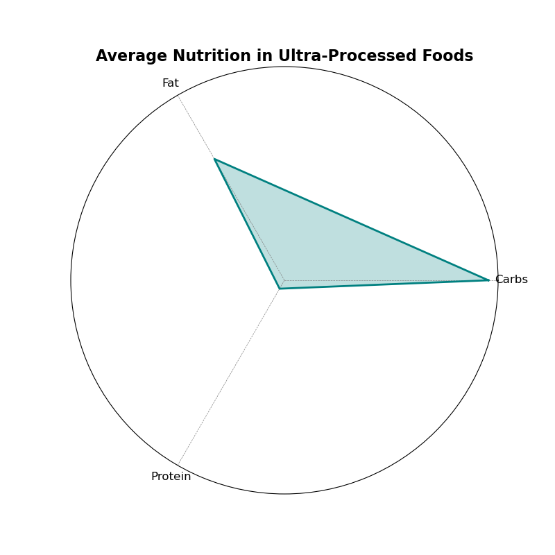

Interactive Breakdown of Food Categories
This interactive chart lets you explore food categories dynamically, revealing the breakdown of processed vs. unprocessed foods. Hover over each section to see percentage contributions, and click on a legend to isolate specific food groups for a clearer comparison! üîçüçéüçî
This visualization highlights how **ultra-processed foods dominate modern diets**. These foods often contain high levels of sugar, unhealthy fats, and preservatives, contributing to various health risks. Meanwhile, minimally processed and whole foods provide essential nutrients, promoting a balanced and healthier lifestyle.
Proportion of Processed VS Healthy/ Minimally processed foods consumed

1. The analysis shows that 95.3% of the dataset is dominated by ultra-processed foods, highlighting their central role in modern diets and their contribution to the global health crisis. With their calorie-dense, nutrient-poor composition, ultra-processed foods are linked to rising rates of obesity, diabetes, and other chronic illnesses. This overwhelming dominance emphasizes the urgent need for accessible healthy alternatives, consumer education, and stricter regulations to promote a shift toward nutrient-rich, minimally processed diets for better health outcomes.
Average Fat Content by Food Category Group
2. The analysis of average fat content by food category group reveals a stark contrast between sources of good fats and bad fats. Packaged snacks, categorized as bad fats, dominate the chart, highlighting their significantly high fat content. In contrast, dairy products and protein sources, which are good fat contributors, offer healthier alternatives with moderate fat levels. This disparity underscores the nutritional challenges posed by ultra-processed foods, which often have excessive unhealthy fat content compared to natural or minimally processed options. The findings emphasize the importance of promoting healthier food choices and reducing reliance on high-fat processed snacks to support better dietary habits and overall health.
Comparative Nutrient Distribution Across Food Categories
3. The radar chart provides a comparative analysis of nutrient distributions across broad food categories, highlighting significant differences between healthy, minimally processed, and ultra-processed foods. Healthy categories, such as “Healthy - Protein,” show balanced levels of protein and lower concentrations of fats and carbs, aligning with nutritional guidelines. Conversely, ultra-processed categories like “Snacks” and “Fast Food” exhibit elevated levels of fats and carbs, alongside reduced protein content, emphasizing their calorie-dense and nutrient-poor profiles. The “Other” category, exemplified by items like sauces and soups, demonstrates moderate nutrient variability, reinforcing its diverse nature. This visualization underscores the disparity in nutritional quality between food groups, illustrating how ultra-processed foods contribute disproportionately to caloric intake while offering limited nutritional value.
Calories vs. Protein Content Across Food Categories
4. The scatter plot illustrates the relationship between calories and protein content across different food categories. Ultra-processed foods, represented in various shades of red, dominate the lower protein range while exhibiting high caloric content. In contrast, minimally processed foods (light blue) and healthy protein-rich options (dark blue) show higher protein levels relative to their caloric content, indicating a more balanced nutritional profile. This distinction underscores the nutritional disparity between ultra-processed and healthier food options, highlighting the potential role of minimally and unprocessed foods in promoting better dietary choices.
Top 20 Brands with the Highest Proportion of High-Calorie Products

5. The visualization displays the top 20 brands with the highest proportion of high-calorie products, highlighting brands such as Fenton Enterprises and Goodie Girl Inc., which produce nearly all high-calorie offerings. This pattern indicates that these brands consistently contribute to calorie-dense options in the market. Identifying such trends can help consumers make informed choices and assist policymakers or health advocates in targeting interventions to reduce the prevalence of high-calorie, low-nutrition foods.
Average Sugar Content in Beverages by Brand
6. The visualization highlights the significant variation in average sugar content across beverage brands. Kingston Marketing Co leads with the highest average calories per carbohydrate, suggesting it produces highly sugar-laden beverages compared to other brands. Brookside Winery, LLC, and Healthy Sweets, Inc. also rank prominently, emphasizing their contribution to high-calorie beverages. These findings underline the potential health risks associated with the consumption of beverages from these brands, particularly in terms of sugar-induced caloric intake. Monitoring and regulating sugar levels in such products can play a crucial role in addressing public health concerns related to diet and nutrition.
Category Distribution in Ultra-Processed Foods
7. The donut chart reveals that ultra-processed foods are predominantly represented by categories like soda (23.9%), cookies and biscuits (20.6%), ice cream and frozen yogurt (19%), and candy (17%). These categories, which are typically high in sugar, unhealthy fats, and additives, constitute the majority of ultra-processed food consumption. Such dominance of sugary beverages and snacks highlights their significant contribution to the global health crisis, as these foods are linked to obesity, diabetes, and other lifestyle-related diseases. Addressing the overconsumption of these specific categories is critical for mitigating health risks associated with ultra-processed foods.
Pareto Analysis of Ultra-Processed Food Categories
8. The Pareto chart highlights that a small number of ultra-processed food categories, particularly soda, cookies & biscuits, and candy, contribute disproportionately to the overall calorie count. Soda alone accounts for a significant portion of the calories, with other categories like ice cream and chips also playing a notable role. This observation underscores the potential for targeted interventions in these high-calorie categories to make a meaningful impact on addressing the health risks associated with ultra-processed foods, aligning with the 80/20 principle for efficient prioritization.
Average Nutrition in Ultra-Processed Foods
9. The radar chart showcasing average nutrition in ultra-processed foods highlights an imbalanced nutrient profile. Carbohydrates dominate the nutrient composition significantly, while protein and fat contribute relatively less. This suggests that ultra-processed foods are primarily rich in carbohydrates, which are often associated with added sugars, further emphasizing their potential role in unhealthy dietary patterns.
Brand Contributions: Calorie and Nutrient Ratios
10. The bubble chart comparing brands based on calorie contributions and nutrient ratios reveals significant variability among brands in terms of average calories and calories per fat. Certain brands, such as Ferrara Candy Company, stand out for their disproportionately high calorie-to-fat ratios, while others show a more balanced or lower nutrient density. This visualization underscores the need to scrutinize specific brands that contribute heavily to high-calorie, nutrient-poor food options.